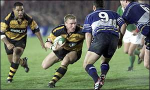

| You are in: You are in: Rugby Union: International |
|
|
Tuesday, 15 January, 2002, 16:08 GMT
Powell called in by Wales

Andrew Powell has been in good form for Newport
Newport back-row man Andrew Powell has continued his fine season by being called up to the Wales squad preparing for the Six Nations.
The 20-year-old was outstanding in the Black & Ambers' win over Newcastle on Friday and has been added to the 36-strong squad training at the Vale of Glamorgan Hotel complex. He said: "I was hoping to get into the Wales Under-21s this season, but I had an A cap in November and Mac (Newport coach Ian McIntosh) told me if I tried harder I could go all the way and now this has happened. "I can't really believe it. It's been a great few months and it has just flown by." Powell, who has made just 16 appearances for Newport in senior rugby, said: "It's everybody's hope to be involved but if I don't make it I'll keep my head up and try again, I'm young and I'll give it all I've got. "Newport's form has been outstanding. We are really coming together now as a unit. "Ian McIntosh has poured so much into the side and our win over Newcastle has given us a good platform for this week's game against Llanelli."
|
See also:
Other top International stories:
Links to more International stories are at the foot of the page.
|
||
Links to more International stories
|
| ^^ Back to top | ||
| Front Page | Football | Cricket | Rugby Union | Rugby League | Tennis | Golf | Motorsport | Boxing | Athletics | Other Sports | Sports Talk | In Depth | Photo Galleries | Audio/Video | TV & Radio | BBC Pundits | Question of Sport | Funny Old Game ------------------------------------------------------------ BBC News >> | BBC Weather >> ---------------------------------------------------------------------------------- © MMII | News Sources | Privacy |
||